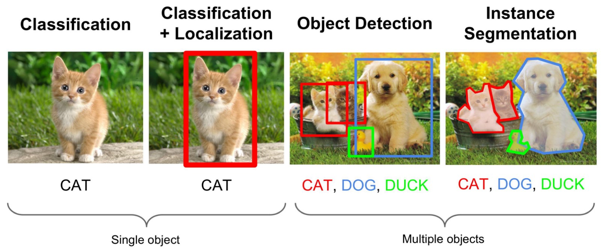
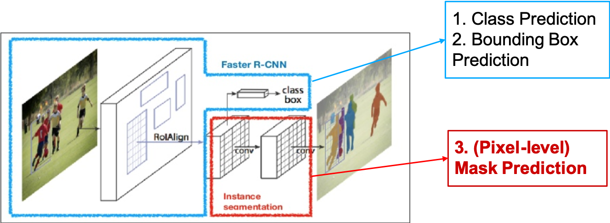
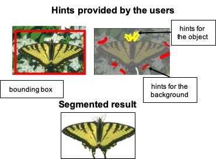
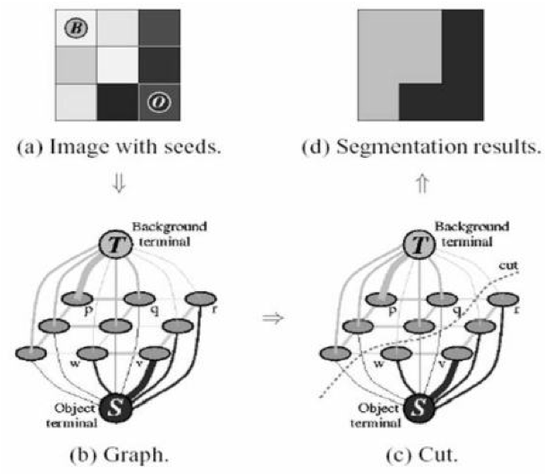
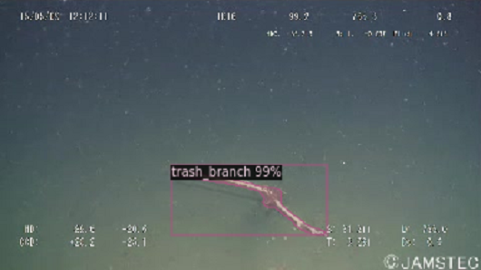
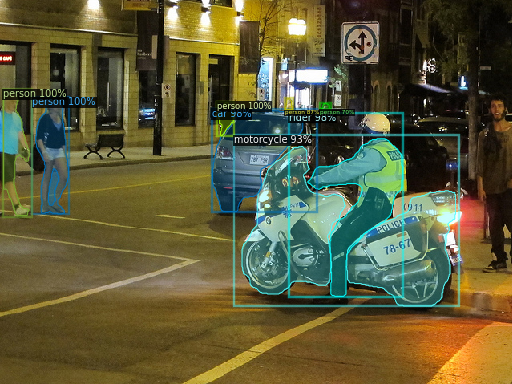
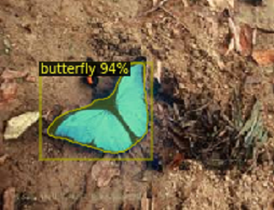
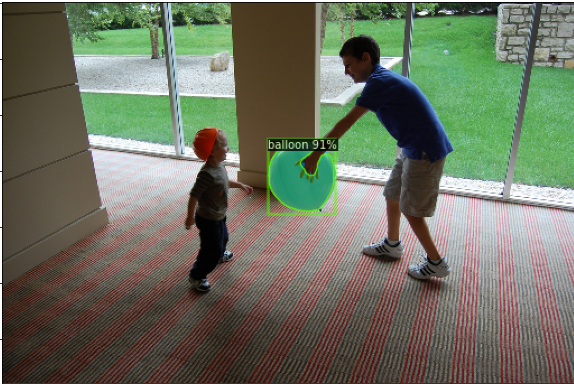
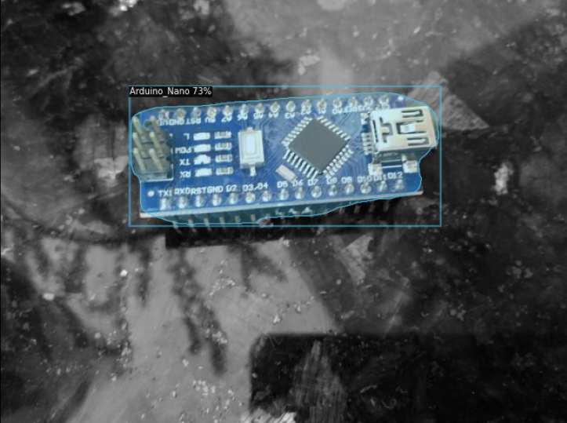

CS766 Project An Interactive Instance Segmentation App
Outline
We have built an exciting app that people can use for their instance segmentation tasks. Users can upload
their own images
and obtain the annotated image. For each object detected in the image, the annotation includes a bounding box
that surrounds the object, a class label (the class that the object belongs to), and a binary mask that
segments the object from the background. We offer multiple modes to allow users to specify the type of objects
they are interested in. Furthermore, we provide the interactive functionality powered by GrabCut that allows
users to iteratively refine the segmented results.
Motivation
The task of instance segmentation is extremely important for critical computer vision tasks such as those
involved with autonomous vehicles. For instance, if we solely use object detection in the autonomous vehicles,
there is a chance that the bounding boxes of multiple cars may overlap and this will confuse the self-driving
vehicle. Instance segmentation helps overcome this flaw. The ability to detect the spatial boundaries of
objects down to pixel level detail instead of broadly sensing their location could mean the difference between
the vehicle safely navigating its way through and the vehicle striking other cars or objects. In a world of
high
velocity traffic and unpredictability, the smallest details can have some of the most serious consequences.
Instance segmentation will continue to play a crucial role in various computer vision tasks long into the
future. Autonomous vehicles, medical imaging, facial recognition, robotic procedures; all of these fields rely
on being able to accurately differentiate object instances, and we are fascinated by its long term potential.
Background
Instance Segmentation
Instance segmentation is a combination of object detection (classify individual objects and localize them
using a bounding box) and
semantic segmentation (classify each pixel into the given classes). Instance segmentation involves detection
and segmentation of the
individual instances of objects. In the present study, we used both a deep-learning-based algorithm
(Mask-RCNN) and a graph-based algorithm that allow users' inputs (GrabCut) to perform the instance
segmentation task.

Figure 1. A Brief Explanation of Instance Segmentation. (Image Source:
Halbe, 2020)
Methods
Mask R-CNN
Mask R-CNN (He et al., 2017) is a state-of-the-art
instance segmentation deep learning model. It extends Faster R-CNN, a fully convolutional neural network, to
perform
pixel-level image segmentation.
An extra branch is added on top of the Faster R-CNN architecture to
predict the binary mask for each of the detected instance. This mask branch functions in parallel with the
existing
branches for
classification (object class prediction) and localization (bounding box prediction).
The mask branch is a small fully-connected network that is applied to each region of interest (ROI) to
predict a segmentation mask
on a per pixel basis. This extra mask branch decouples the classification task from the pixel-level mask
prediction task, resulting in a better overall performance.
The "backbone" of the underlying CNN model can be adjusted. To optimize the app's interactivity, we chose to
use the CNN backbone model with the
shortest inference time (i.e., ResNet with 50 layers followed by a Feature Pyramid Network, or, R50-FPN).

Figure 2. The architecture of Mask R-CNN. Mask R-CNN extends R-CNN model to perform instance
segmentation. (Image source: He et al., 2017)
GrabCut
To allow the users to iteratively refine the binary mask for a segmented instance, we used the GrabCut
algorithm. GrabCut is a graph-based algorithm that incorporates the hints that users give to iteratively
refine the
instance segmentation result. GrabCut works on one instance at a time, and will consider the instance of
interest as foreground and the rest as background.
The figure below shows an example for how GrabCut works. First, the user shall provide a bounding box to
surround the instance of interest. The region outside the box will be considered as "sure background" and will
not switch to foreground throughout the estimation process. The region within the box will be considered as
"probable foreground", which can be estimated as either background or foreground during the process. In
addition, the user will also give "hints" by using a brush to highlight the region that is "sure background"
and region that is "sure foreground". After the user submits the hints, GrabCut will then estimate the
foreground pixels and background pixels. This give-hint-and-update-result process completes one
iteration of
GrabCut. Usually, the result the user receives after one round of iteration is not ideal. In this case, the
user can give more hints and start another iteration of GrabCut. The mask will be refined iteratively until
the user is satisfied with the result.

Figure 3. An example of how the GrabCut algorithm works (Image Source:
Rother et al., 2004)
Under the hood (see Figure 4), GrabCut uses a graph to represent an image. Each node represents a pixel and
the edge represents the similarity between two pixels (e.g., the similarity in color). A Gaussian Mixture
Model (GMM) is then applied to separately estimate the foreground pixels (the instance of interest) and the
background pixels. The foreground pixels and the background pixels are identified by two distinct connected
subgraphs. After a user gives hints for the foreground and the background, the GMM parameters will be updated
accordingly and thus update the segmentation result. The can take several rounds (give hints to update the
result) until the user is satisfied with the result.

Figure 4. How the GrabCut algorithm works under the hood
Implementation Details
Packages and Envoronment
We implemented the Mask-RCNN model using the python package Detectron2 (Wu et al., 2019), developed by Facebook AI
Research (FAIR). As for GrubCut, we based our app on the python package opencv-python (Bradski, 2000).
To ensure the app can run smoothly with minimal effort from the users, we hosted the app online with Amazon Web Services. The users can simply access the website with any browser to use the app.
Mask-RCNN: Domain-General and Domain-specific Modes
To allow the users to annotate the images in different domains, we have included six instance segmentation
modes. There is one domain-general mode and five domain-specific modes. The details of the each of the mode
are described below. For each of the six modes, we either used a pre-trained model or fine-tuned the model.
For larger
datasets (i.e., the generic, marine, and city modes), we decided to use pre-trained models, and we only
fine-tuned the models when the dataset is small (i.e., the nature, balloon, and micro-controller modes).
Fine-tuning was done with Google
Colaboratory (please see the links for the notebooks).
Overview of the six modes
Generic - This mode provides the largest detection coverage for common objects (1203
common objects).
Marine - Specifically for detecting marine animals such as fish, crab, starfish and
marine waste such
as bottles, nets, and wreckage.
City - Specifically for detecting objects common in urban street
scenes.
Nature - Specifically for detecting squirrels and butterflies.
Balloon - Specifically for detecting
balloons.
Micro-Controller - Specifically for detecting common micro-controllers
(e.g., Arduinos).
A dataset comprising of 7212 images with observations of marine animals, trash, ROVs and multiple other
forms of underwater flora and fauna.
We used the instance version of the dataset that contains 22 different classes of objects.
The pre-trained model available alongside the dataset is used for this mode. (Note: bounding box metrics
in the paper are for a Faster R-CNN model.)
Metrics for Bounding Box
AP
AP50
AP75
APs
APm
APl
34.5
55.4
38.1
27.6
36.2
51.4
Metrics for Segmentation Mask
AP
AP50
AP75
APs
APm
APl
30.0
55.3
29.4
23.2
31.7
48.6

Figure 4b. Inference with fine-tuned model on TrashCan test set
A large-scale dataset comprising of a diverse set of image frames of street scenes from 50 different
cities. There are 5000 images with fine annotations and 20000 with coarse annotations.
The pre-trained CityScapes model provided by Detectron2 is used. (Note: bounding box metrics aren't
provided. Only Segm/AP and Segm/AP50 are provided. )
Metrics for Segmentation Mask
AP
AP50
36.481
62.219

Figure 4c. Inference with pre-trained Cityscape model on custom city image
This is a dataset containing around 800 images of squirrels and butterfiles.
The Mask R-CNN model is obtained through fine-tuning the pre-trained COCO model using the train set. The training
parameters used are the same as that provided in the demo, which is alongside the dataset. The
model is then
evaluated on the test set.
Metrics for Bounding Box
AP
AP50
AP75
APs
APm
APl
63.750
96.952
75.514
nan
nan
64.126
Metrics for Segmentation Mask
AP
AP50
AP75
APs
APm
APl
73.770
96.442
84.619
nan
nan
76.358

Figure 4d. Inference with fine-tuned model on Nature test set
This is a small dataset provided by Matterport containing balloon instances.
The Mask R-CNN model is obtained through fine-tuning the pre-trained COCO model using the train set. The training
parameters used are the same as that provided in this
demo. The
model is then
evaluated on the test set.
Metrics for Bounding Box
AP
AP50
AP75
APs
APm
APl
65.014
84.353
79.896
9.398
54.380
77.943
Metrics for Segmentation Mask
AP
AP50
AP75
APs
APm
APl
75.856
83.622
83.365
7.249
57.591
92.700

Figure 4e. Inference with fine-tuned model on Balloon test set
Micro-Controller Mode (fine-tuned)
Dataset: Micro-Controller Segmentation Data (Tanner)
A small dataset containing annotations for instances of Arduino, Raspberry Pi, Lora, and ESP8266.
The Mask R-CNN model is obtained through fine-tuning the pre-trained COCO model using the train set. The training
parameters used are the same as that provided in the demo, which is alongside the dataset. The model is then
evaluated on the test set.
Metrics for Bounding Box
AP
AP50
AP75
APs
APm
APl
76.320
91.749
91.749
nan
90.000
80.033
Metrics for Segmentation Mask
AP
AP50
AP75
APs
APm
APl
88.020
91.749
91.749
nan
90.000
96.894

Figure 4f. Inference with fine-tuned model on Micro-Controller test set
The Demo of the App
TODO
Challenges We Faced and Solved
Redirecting our project
We had to rapidly change the direction of our project after receiving feedback for our initial proposal.
Our original plan involved implementing the Mask R-CNN as in the original paper and replicating the
results on
the COCO Dataset and then implementing the model on autonomous vehicle datasets such as the Cityscapes
Dataset and the Indian Driving Dataset. We also intended to spend time on enhancing model performance by
making modifications such as tweaking the model architecture
(e.g., the R-CNN backbones), and exploring different training techniques (e.g., multi-scale train/test,
horizontal flip test).
We realized that this plan was impractical given the time and computer resources available. We decided to
change the direction and emphasis of our project
to deliver an end result that is both tangible and achievable.
Platform Independence of App
We initially planned to develop an app that users can install and run locally. However, the core engine
package of instance segmentation, Detectron2, is natively supported only on Linux and Mac OS. We spent a
lot of time exploring workarounds to have it work on Windows OS but in vein. Therefore, we managed to host
the app online with the Amazon Web Services so that users with any OS can use the app.
Computational Resources
Initially, we decided to train all the models ourselves with large dataset. However, that turned out to
be impractical due to the computational resources we had (detailed below). Therefore, for larger datasets
(i.e., the generic, marine, and city modes), we decided to use pre-trained models, and we only fine-tuned
the
models on smaller dataset (i.e., the nature, balloon, and micro-controller modes).
To use Google Coloboratory, the dataset must be uploaded to Google drive in order for Colab to read
it. This was a significant bottleneck because uploading
large datasets onto Google drive is slow - with the bandwidth of 100Mbps download speed and 40Mbps
upload speed, uploading 1GB of files to Google drive took us
5 hours. Although we were able to find an existing COCO dataset on a publicly accessible Google
drive, other datasets we were considering (e.g., Open Images Dataset, Indian Driving Dataset) were not
publicly available on Google drive.
The second problem was related to the limitation of the Colab environment. Even when we were able to
mount the public Google drive that contains the COCO dataset,
Colab crashed upon loading the large-scale dataset (2017 COCO training set is of size 19GB). After days
of research and trial and error, we
eventually managed a workaround using symbolic links, which ensures that Colab wouldn’t crash due to
being inundated by many images. This, however, requires the
dataset to be present on the Google drive ina specific format. we were only able to configure the 2017
COCO dataset into such formats, but not for other datasets.
Colab was under-powered to train the Mask R-CNN model from scratch with such a large dataset. The free
version of Colab only provides 12.8 GB of RAM, one
single GPU (with 11.4MB of memory), and each session only allows 12 hours of training. More annoyingly,
if the browser gets idle,
the Colab session would be terminated automatically, which means the the client computer can’t be turned
off or used for other purposes
while training. The authors of [1] said that it took them 32 hours to train the Mask R-CNN model from
scratch with COCO dataset using a 8-GPU machine.
With an single-GPU machine, the 12-hour session limit, and
the termination mechanism, we deemed Colab not appropriate for such kind of heavy training task.
Availability of instance segmentation datasets
There were not a lot of instance segmentation datasets to choose from while fine-tuning because we had to
constrain the size of the dataset to account for
the limited computational resources.
[1] Kaiming He, Georgia Gkioxari, Piotr Dollar, and Ross Girshick. Mask r-cnn. In Proceedings of the
IEEEInternational Conference on Computer Vision, pages 2961–2969, 2017.
[2] Yuxin Wu and Alexander Kirillov and Francisco Massa and Wan-Yen Lo and Ross Girshick. Detectron2.
https://github.com/facebookresearch/detectron2. 2019
[3] Hong, Jungseok; Fulton, Michael S; Sattar, Junaed. TrashCan 1.0 An Instance-Segmentation Labeled Dataset
of Trash Observations.
Retrieved from the Data Repository for the University of Minnesota, https://doi.org/10.13020/g1gx-y834. 2020
[4] Marius Cordts, Mohamed Omran, Sebastian Ramos, Timo Rehfeld, Markus Enzweiler, Rodrigo Benen-son,
Uwe Franke, Stefan Roth, and Bernt Schiele. The cityscapes dataset for semantic urban scene understanding,
2016.
[5] Agrim Gupta, Piotr Dollar, and Ross Girshick. A Dataset for Large Vocabulary Instance Segmentation.
Proceedings of the {IEEE} Conference on Computer Vision and Pattern Recognition. 2019
[6] Waleed Abdulla. Mask R-CNN for object detection and instance segmentation on Keras and TensorFlow.
https://github.com/matterport/Mask_RCNN. 2017.
[7] G. Varma, A. Subramanian, A. Namboodiri, M. Chandraker, and C. V. Jawahar. IDD: A Dataset for
Exploring Problems of Autonomous Navigation in Unconstrained Environments.
In 2019 IEEE WinterConference on Applications of Computer Vision (WACV), pages 1743–1751, 7
[8] Tsung-Yi Lin, Michael Maire, Serge Belongie, James Hays, Pietro Perona, Deva Ramanan, Piotr Doll ́ar,and
C Lawrence Zitnick.
Microsoft coco: Common objects in context. In European Conference onComputer Vision, pages 740–755. Springer,
2014.